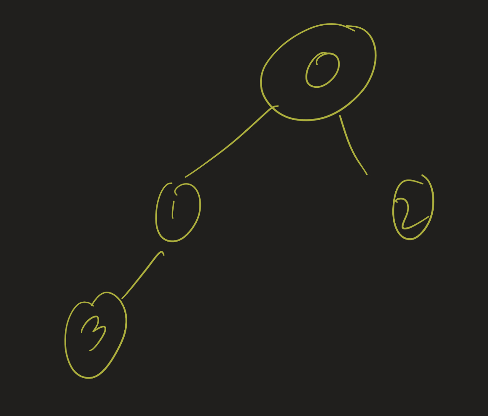
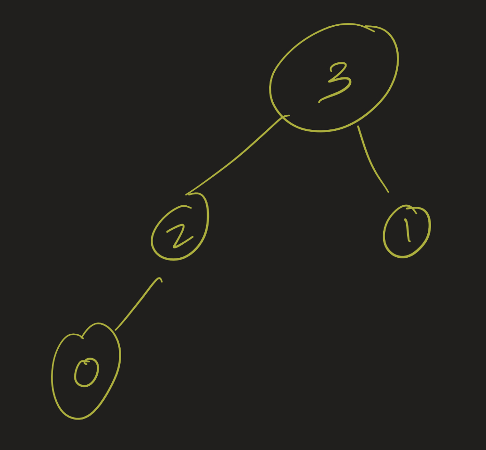

Professor Abdul-Quader
Quickselect / Radix Sorting
Due this week. Questions? Thoughts?
Parser: turn input into List of course rosters (each is a list of integers)
Color vertices in order. How many colors?

Color vertices in order. How many colors?
… or any other problem you’ve seen that was interesting and that you’d like to explore in more depth.
Changing the description:
Ideas?
This question of how to select the pivot in the quicksort algorithm is well studied (in particular by Robert Sedgewick in his 1975 Ph.D thesis).
We will study some other possible improvements.
Make the pivot be the median of three elements. Two simple implementations:
The worst case here is still \(O(n^2)\)! But it’s somewhat less likely to happen, and on average the random version improves on the number of comparisons that the “random pivot” strategy would make.
The version currently implemented in the Java standard library Arrays.sort, created by Vladimir Yaroslavskiy, Jon Bentley, and Joshua Bloch, uses two pivots. Idea:
Technically, the one in the JDK is much more complicated, but this is the spirit of the algorithm.
Recall the selection problem: given an unsorted list and an integer \(k\), find the \(k\)-th largest element. We can use a variant of quicksort, called quickselect, to solve this problem:
Otherwise? Recursion!
Find the 3rd largest element of the following list: [3, 1, 4, 5, 9, 2, 6]
Worst case: \(O(n^2)\). Proof?
Best case: each partition takes \(m\) comparisons (really \(O(m)\), but we will simplify), where \(m\) is the size of the part of the array that we are looking at. If the pivot is the median every single time, then the number of comparisons needed is:
\[n + n / 2 + n / 4 + \ldots = 2n\]
which is \(O(n)\).
Average case? This is the scenario where every pivot is equally likely.
Let \(T(n, k)\) be the expected time to find the \(k\)-th smallest in an array of size \(n\), and \(T(n)\) be the largest value over all \(k\).
\[T(n) \leq n - 1 + average(T(n / 2), \ldots, T(n - 1))\]
Magic: prove that \(T(n) \leq 4n\) by induction.
\[ \begin{align} T(n) &\leq n - 1 + average(4(n / 2), \ldots, 4(n - 1)) \\ &= n - 1 + 4(3n / 4) < 4n \end{align} \]
So \(T(n) = O(n)\).
Given a list of \(N\) integers, each of which is between \(0\) and \(100\), sort it in \(O(N)\) time. (Suppose \(N\) is much larger than \(100\)).
Have we seen this before? What is the algorithm for this? Why does this not contradict the theorem from last time?
Keep 100 “buckets”. Run through the list and add to a counter. Then run through all the buckets and output them all.
Suppose there are \(N\) numbers and \(M\) buckets. What is the running time?
What if \(N\) is much smaller than \(M\)? In particular: how do we sort \(10\) elements that are all between \(1\) and \(999\)? Two ideas:
Important: each step must be stable.
Exercise: try this out on 125, 111, 061, 209, 290, 095.
Consider an \(n\) by \(n\) matrix \(M\), whose rows and columns are each sorted in increasing order. That is, the elements of each row increase as you go left to right, and the elements of each column increase as you go down. Determine if a number \(x\) is in the matrix in \(O(n)\) comparisons.
Due Friday, 5/2: